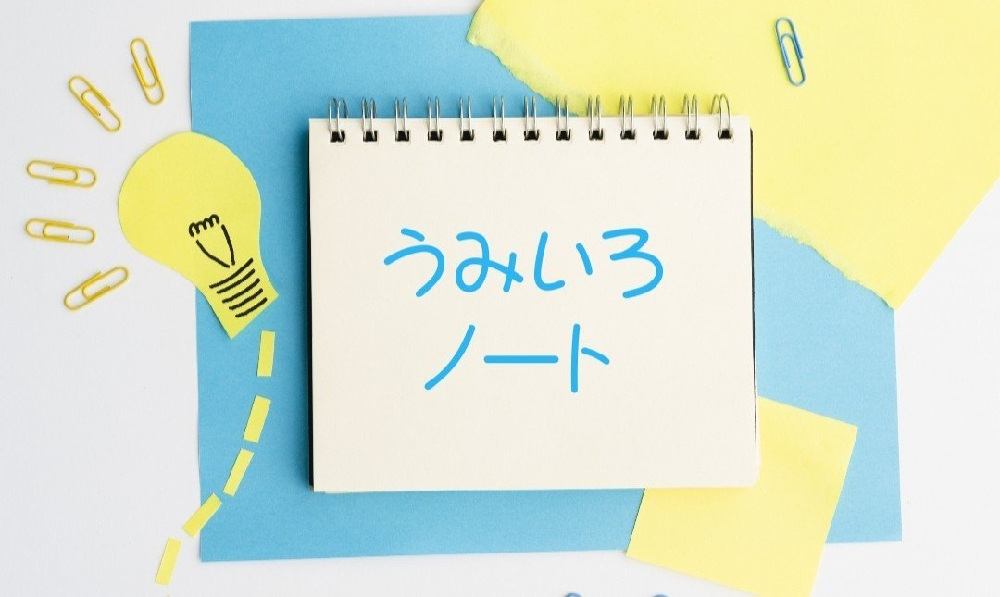

こんばんは。
今回リレーマガジンに参加することになりました、金曜日担当の進藤海（しんどうかい）と申します。
初回は自己紹介と″うみいろノート″の概要を説明しますね。
自己紹介
僕はこれまでnoteやWritone、星空文庫で小説や詩を発表してきました。かれこれ今年で５年の歳月が経ち、時の過ぎ去る早さに驚きを隠せません。笑
小説や詩では普遍的なテーマ、人生や愛って何なのかを常に考えながら書いています。もしかしたら一生かけても見つからない旅かもしれない。でも、読者の皆さんの日常をより鮮やかにしたいという想いが創作のエネルギーになっていて、今は書くことが楽しくて仕方ないんです。
そうした日々の中で、ある時、小説や詩を朗読してもらえるプラットフォーム・Writoneに出会いました。自作が朗読という新しい形に生まれ変わり、皆さんの元に届けられる喜びはとても大きなものでした。共作は一人で作り上げる世界とは違い、多様に変化していくので、すっかりその魅力にハマっています！
そして、Writoneで活動を始めてから１年が過ぎようとする頃。Writoneの人気ライター・モグさんからお声がけいただき、今回のリレーマガジンに参加させていただくことになりました。
共同で一つのマガジンを作っていく未知の世界。これからどのようにマガジンが広がっていくのか、僕自身もとても楽しみです！
うみいろノートって？
さて。そろそろ″うみいろノート″の説明もしないと。笑
ズバリ！このノートは「日常の一コマを言葉に乗せる僕らのノート」です。
何気なく過ぎていく毎日でも、きっと心に残る一コマがある。それは見知らぬ人の親切かもしれないし、偶然通りがかった喫茶店の珈琲の味かもしれない。忘れかけそうになる出来事や人との繋がりを言葉や写真でお届けしたいと思います。
アルバムに残すには大げさでも、ノートに書くのならいいかも。そんな思いで″うみいろノート″と名づけました。
ちなみに最初に「僕らのノート」と書いたのは、このノートを見て、「そんなことあったんだ。私もこんなことあったよ」とか「それ知ってるよ！○○でしょ！」などなど、皆さんと共有できたらいいなぁと考えたからです。ですので、もしよろしければコメントをジャンジャン書いてくれると嬉しいです。まだ真っ白なこのノートに一緒に書いていければなぁと…！φ(´ω｀●)
とりあえず″うみいろノート″の概要はこんな感じです。
皆さんと楽しめるノートにしたいなと今からワクワクしています…！
皆さんの金曜日に少しでもお邪魔できたら幸せです(* ´ ▽ ` *)これから宜しくお願いします🌠